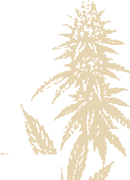

Pflanze aus dem Flyer — freigestellt
Andrees „im Hintergrund ein paar Weedpflanzen wie Designimage.jpeg", direkt aus seinem Flyer extrahiert statt als Kupferstich-Platzhalter: Hintergrund weg, Alpha-Kante, drei Farbfassungen. Kein Code nötig — die Datei ersetzt nur den Platzhalter in derselben Theme-Einstellung.

So liegt die Ebene auf dem dunklen Feld.



| Fassung | Modus | Deckkraft | Untergrund | messbare Wirkung |
|---|---|---|---|---|
| grün | multiply | 12 % | #f3e8cf Papier | 22,5 / 255 — trägt |
| grün | multiply | 12 % | #0a2416 Tiefgrün | 1,98 / 255 — praktisch unsichtbar |
| papier | soft-light | 60–65 % | #0a2416 Tiefgrün | 6,8 / 255 — dezent sichtbar |
| hell | normal | 6 % | #0a2416 Tiefgrün | 12,0 / 255 — sichtbar, etwas härter |
Der Fund: multiply funktioniert nur auf hellem Grund. Auf dem Tiefgrün des Footers/Newsletter-Blocks bleibt von der Pflanze messbar nichts übrig (1,98 von 255), auf Papier trägt sie (22,5 von 255). Für dunkle Flächen also soft-light mit der Papier-Fassung, für Papier multiply mit der grünen — nicht eine Regel für beide.
Grenze der Quelle, ehrlich: der Flyer gibt die Pflanze nur mit 260 × 360 px her (der untere Teil steckt hinter dem QR-Kasten, der auf der Pflanze liegt — deshalb ist der Freisteller der obere Trieb). Bei 92 vh ist das 1,8× — bei 6–10 % Deckkraft unkritisch, bei voller Deckkraft oder auf 2×-Displays weich. Ein echtes Pflanzenfoto (≥ 1200 px hoch) ersetzt die Datei später ohne Code-Änderung.